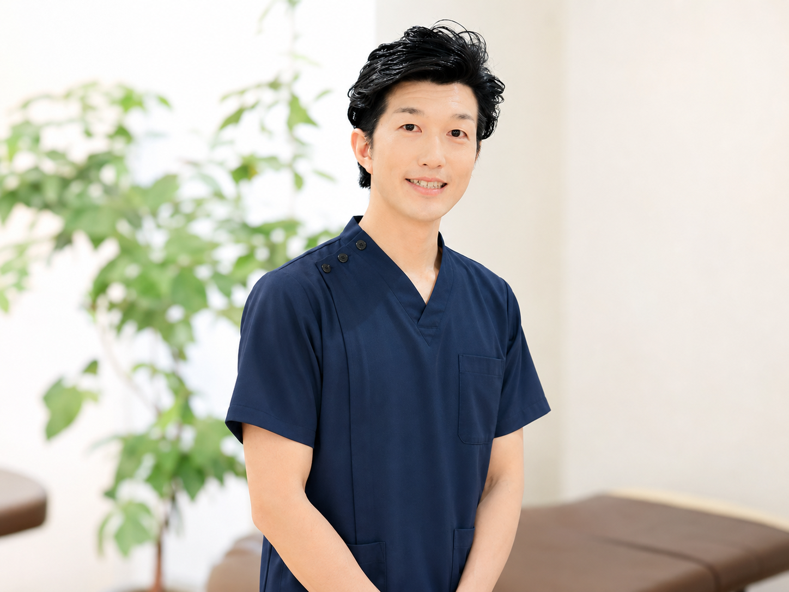
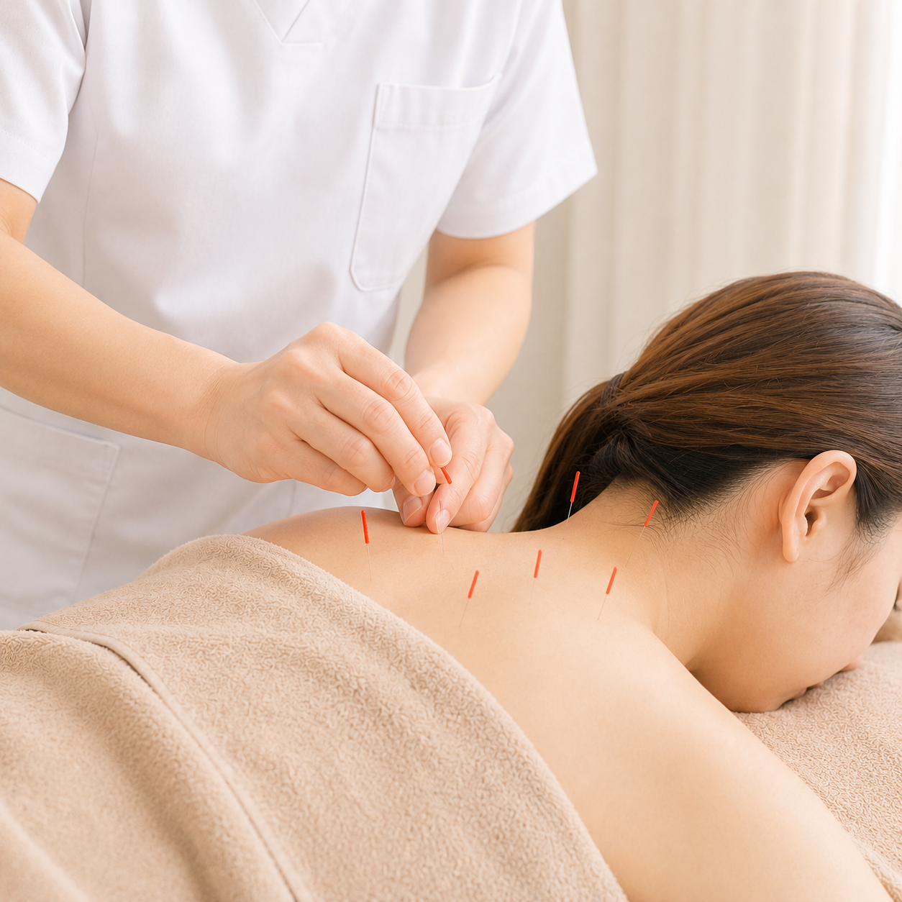

当院について
地域の皆様の「健康の拠点」として
院長紹介

谷内 直人（たにうち なおと）
柔道整復師（国家資格）
健やかな毎日を、この街と共に。
痛みを取り除き、その先の『やりたい』を叶えたい
はじめまして。杉田さくら柔整治療院、院長の谷内（たにうち）です。
私が開院した理由は「心も前向きになり、人生の質が変わる治療がしたい」この一心です。単に痛みを取るだけの「その場しのぎ」ではなく、不調の根本から向き合い、患者様が本来の活力を取り戻すためのパートナーでありたいと日々施術にあたっています。
急な痛みやケガでお困りの際は、決して我慢せず、早めにご相談ください！
「どこへ行っても良くならなかった」というお悩みも、ぜひ一度お聞かせください。
杉田という温かい街で、お子様からご年配の方まで、幅広い世代の皆様に寄り添える存在を目指しています。「孫と思い切り遊びたい」「スポーツで最高の成果を出したい」「仕事の疲れをリセットしたい」……そんな一人ひとりの願いに本気で向き合います。
皆様が桜のように晴れやかな笑顔で毎日を過ごせるよう、誰よりも情熱を持って健康に寄り添い続けます。
当院の施術
一人ひとりの症状に合わせた最適な施術を提供します
手技療法・物理療法
柔道整復師の国家資格を持つ院長が、手技による丁寧なアプローチを行います。超音波・電気治療・ウォーターベッドなど最新機器も組み合わせ、症状に最適な施術を提供します。
施術メニューを見る外傷のケア・固定処置

鍼灸治療
運動療法・リハビリ
骨盤矯正
スポーツ障害対応
丁寧なカウンセリング
施術の流れ
ご来院・受付
受付にて問診票をお渡しいたします。保険証をお持ちの方はご提示ください。初回はお時間に余裕を持ってお越しください。
カウンセリング・検査
お体の状態を詳しくお伺いし、痛みの原因を特定するための検査を行います。
施術プランのご説明
検査結果をもとに、症状の原因と施術プランを分かりやすくご説明いたします。ご納得いただいてから施術を開始します。
施術
お一人おひとりに合わせたオーダーメイドの施術を行います。
アフターケア・次回予約
施術後の注意事項やセルフケア方法をお伝えします。再発防止に向けた運動療法もアドバイスいたします。
お体の不調、お気軽にご相談ください
ご予約・お問い合わせはお電話にて承ります